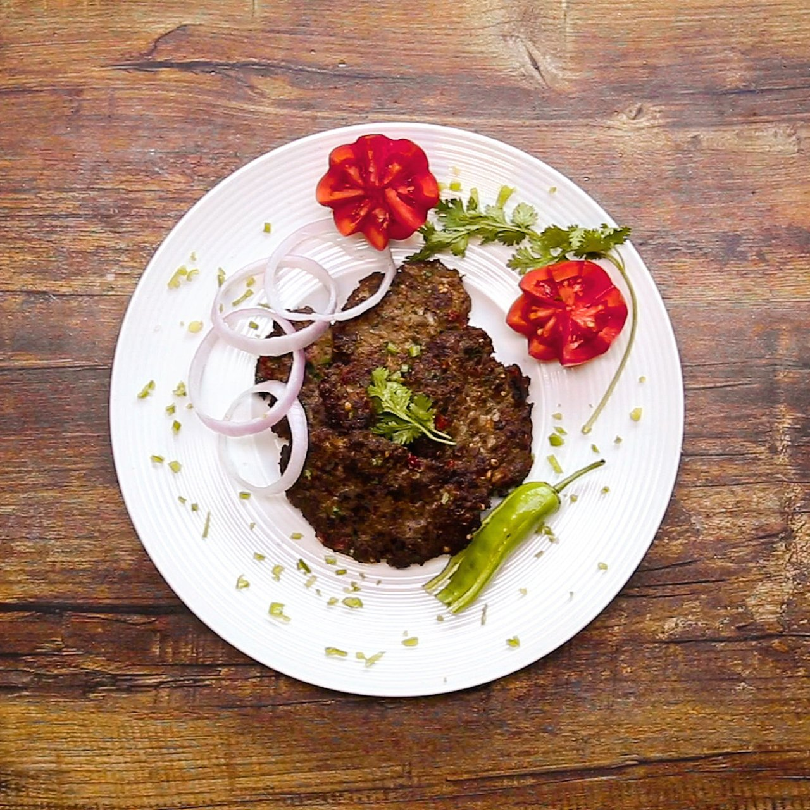
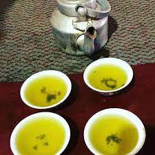

Destination Guides
Places To Visit In Parachinar
Location
Take a van ticket from peshawar to Thall city then take a bus ticket from Thall to Parachinar
SpeenGhar
- Top Attractions: Peak of Snow Ghar Mountain covered with white Snow
- Local Cuisine: Big Rice of Parachinar with Desi Ghee, Qahwa
- Travel Tips: Purchase food from local market of parachinar as their are no shops in mountanious area
Shalawazan
- Must See Places: Morgon Kalay, Tangi kalay, Rice Fields, Afghan Border.
- Local Cuisine: Arginjo bakaly, Chapli Kabab, Mutton Rosh.
- Travel Tips : Buy meat and rice from local market and cook it along river side for more adventure.
Local Food
Chapli Kabab and Qahwa

